Four eras of marketing in fifty years. Each one moved the moment of decision closer to the buyer — and further from the brand’s own voice.
1970s – 1990s
Broadcast
TV · Print Radio · Outdoor
Brand → audience. One-way. The buyer listened, then walked to a shelf to decide.
2000s – 2010s
Search
Google · Amazon Email · Reviews
Audience finds brand. Buyers go looking. The first online reviews start mattering.
2010s – 2020s
Mobile
Apps · Notifications Always-on access
Always within reach. Convenience wins. Discovery becomes constant background noise.
2020s +
Social
Reels · Reviews Influencers · UGC
Audience IS the brand. Buyers research peers before they research products. Trust got redistributed from advertising to people.
02Then vs now
Two journeys, same buyer.
The same decision, made in completely different worlds.
Then — Pre-2010
See a TV / print ad
↓
Ask a friend or family
↓
Walk into a store
↓
Decide at the shelf
↓
Buy
Now — Social-led
Scroll a feed, see a reel
↓
Check reviews & ratings
↓
Watch an influencer use it
↓
Decide before the shop
↓
Buy — then post about it
03Objectives
Six questions worth answering.
The study is built around six tight objectives — each one a specific thing to measure.
01
Measure social media’s actual impact on what people buy.
02
Identify the levers — influencers, ads, reviews — that move buyers.
03
Compare platforms — which ones shape preference, and how.
04
Test the link between engagement on social and purchase intent.
05
Profile age effects — especially Gen Z and young professionals.
06
Translate findings into things brands can actually do.
04Method
Mixed method, kept simple.
A structured questionnaire on Google Forms gathered the primary signal. Secondary sources framed it.
Primary
Google Forms survey
21 respondents · students & young professionals · convenience sample
Secondary
Journals, reports, case work
Statista, McKinsey, Pew, HBR, Sprout Social, etc.
% analysis · graphs · case framing
Descriptive & analytical design
Design
Descriptive — describe what is happening — combined with light analytical work to find which levers matter most.
Tools
Percentage analysis, frequency tables, and basic visual charts. Kept lightweight on purpose; the survey size doesn't justify regression.
Observation
Alongside the survey, consumer behaviour was observed directly on platform — how people engaged with ads, influencer content, and promos in the wild.
Scope
Instagram, YouTube, Facebook, Snapchat — the platforms the sample actually uses every day.
05Who responded
Not just students.
A mix worth noting — most of the sample earns its own money, full-time or running its own thing.
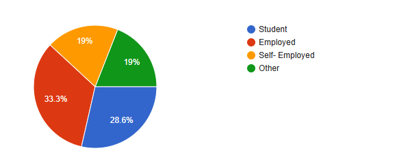
71%
Earn their own income
Employed 33.3%, students 28.6%, self-employed 19%, other 19%. The sample isn't all students — a clear majority have buying power.
So what. The percentages downstream aren't "what young people think" — they're what a working / earning sample reports about their actual purchases.
06Hours on social
1–3 hours, every day.
A meaningful slice of the day — long enough to absorb several feeds, short enough that brands have to earn the attention.
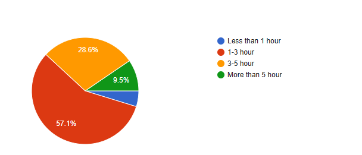
57.1%
Spend 1–3 hours a day
Plus 28.6% at 3–5 hours and 9.5% over 5 hours. Roughly 95% of the sample spends at least an hour a day inside a social feed.
So what. Reach isn't the question. The question is what shows up during that 1–3 hour window — and how often the same brand does.
07Where people are
Two platforms run the show.
Instagram + YouTube reach almost the whole sample. Snapchat reaches most. Facebook reaches a few. Twitter is functionally absent — a single respondent.
Instagram
85.7%
YouTube
81.0%
Snapchat
61.9%
Facebook
14.3%
Twitter / X
4.8%
So what. If a brand can only show up well in one place, that place is Instagram. If it can fund a second, that's YouTube. Anything left after that is bonus reach.
08Ad exposure
Ads are unavoidable.
85%
Respondents who see product ads often or always
52.4% say often. 33.3% say always. Almost no one says rarely.
The feed is a billboard now. The question isn't whether your audience sees ads — it's whether they see yours.
For the brand
Constant exposure raises the bar. Generic, polished ads disappear. Specific, weird, or useful ones get remembered.
For the buyer
Discovery has become passive. Most new products are found while scrolling, not while searching.
The mechanic
Targeting algorithms decide which ads each person sees. Two people open the same app and see different worlds.
09Conversion
Exposure becomes spending.
76.2%
Have bought a product after seeing it on social media
Three in four respondents converted from a feed at least once. Social media doesn't just create awareness — it closes sales.
And 38.1% say ads often influence their buying decisions. Another 47.6% say sometimes. Almost no one says never.
Awareness vs. purchase
The old model assumed a long gap between seeing an ad and buying. On social, those moments are increasingly the same moment — tap, click, checkout.
The implication
Social media is now a full-funnel channel — top, middle, and bottom — not just a brand-awareness tool.
10Content that influences
Reviews beat everything else.
When the survey asked which content actually moves a purchase decision, the answer was lopsided.
So what. The peer-review economy is real. People weigh what other customers said more than what anyone paid — including their own friends, in this sample.
11What drives a buy
Trust beats everything else.
Asked what most encourages an online purchase, respondents ranked the five levers like this:
47.6%
Reviews & ratings
Peer voices outweigh the brand’s own voice. People want to see other people who paid.
28.6%
Discounts & offers
Urgency works. Limited-time deals collapse the consideration gap.
9.5%
Brand reputation
Helps you make the shortlist. Rarely closes the sale by itself anymore.
9.5%
Visual appeal
Beautiful product shots earn the click. Reviews earn the purchase.
4.8%
Influencer promotion
Surprisingly low — influencers create awareness, but reviews close the sale.
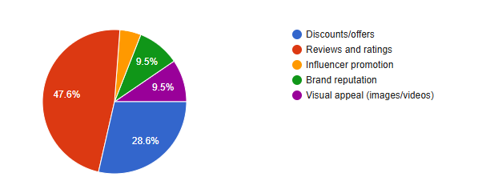
The student’s own chart · n=21
The order matters. Reviews are the gate. A brand can spend everything on visuals and influencers, but if the reviews are thin or bad, the sale stalls.
Reviews + discounts together = 76.2% of decisions. The rest is rounding.
12Reviews check
71.4% always check reviews before buying.
Reading reviews isn't a fallback — it's the default step in the buying process.
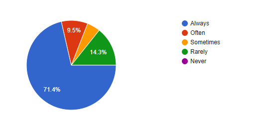
71.4%
Always check reviews
Plus 9.5% often. Only 14.3% rarely look — almost no one buys without a peek.
So what. If a brand’s reviews are thin, missing, or visibly poor, the sale isn’t lost at checkout — it’s lost before the buyer even reaches the page.
13The regret factor
71.4% have regretted a social-media-driven buy.
For all the influence, most buyers also walk away from a purchase feeling burned at some point.
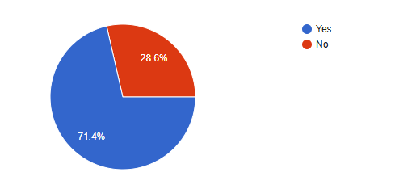
71.4%
Have regretted at least one
Only 28.6% say they’ve never regretted a purchase influenced by social media.
So what. Conversion is real — but it’s not always satisfying. This is the side of the funnel marketers don’t usually report. It also explains why reviews matter so much: buyers know the risk.
14Trust in influencers
Nobody gives them 5 out of 5.
Asked to rate trust in influencer-promoted products on a 5-point scale, not one respondent picked the top of the scale.
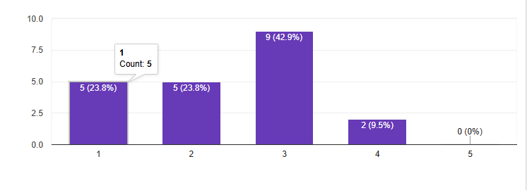
0%
Rated influencer trust 5/5
Distribution: 23.8% at 1, 23.8% at 2, 42.9% at 3 (neutral), 9.5% at 4, 0% at 5.
So what. Influencers create awareness — not full trust. Reviews do that part. The Nike / DW cases that follow show why the trick is to borrow attention from an influencer, then earn trust with social proof.
15How important?
It matters — but not unconditionally.
Asked how important social media is to their purchasing decisions on a 5-point scale, the sample landed solidly above neutral.
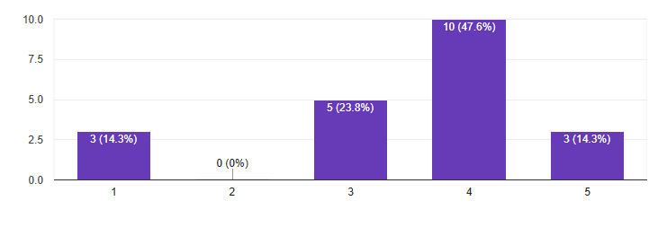
62%
Rate it 4 or 5 out of 5
Specifically: 47.6% at 4, 14.3% at 5, 23.8% at 3 (neutral), 14.3% at 1.
So what. Social media is a serious factor in modern purchasing — the majority say so. But a meaningful 1 in 7 still rate it minimal: this is influence, not gospel.
16Trust hierarchy
Who do buyers actually trust?
The data ranks information sources by how much weight buyers give them. Smaller = trusted more.
Peer reviews & ratings47.6%
Discounts & offers28.6%
Brand reputation9.5%
Visual / influencer alone< 14%
The rule
Trust flows from people, toward brands — never the other way. Buyers believe other buyers first, then prices, then logos.
Why it matters
A perfect ad to a stranger means nothing if three peers say the product is bad. The brand voice is the last voice in the chain, not the first.
What it changes
Most of a marketing budget is spent at the bottom of this pyramid. The leverage is at the top: making reviews easier, more visible, and more honest.
17Market context
A $22-billion industry.
What this study is measuring isn’t a fringe tactic. Globally, influencer marketing more than doubled in five years.
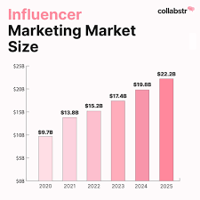
$22.2B
Global influencer marketing · 2025
From $9.7B in 2020 to $22.2B in 2025 — the channel grew faster than most digital advertising categories in the same window.
So what. When 21 respondents say social media drives their purchases, they’re describing the lived end of a market that brands now spend $22 billion a year competing inside.
18Case 01
Starbucks.
The playbook for turning a coffee chain into a lifestyle brand on social — built on six recurring tactics.
Coffee · Founded 1971 · Seattle, WA
Sell the feeling, not the cup.
Starbucks doesn’t lead with the product on social. It leads with the moment — the cup with your name on it, the seasonal red cup, the customer’s own post. The brand quietly hosts a stage that customers perform on, and the content writes itself.
Why it works
Customers do the posting. Starbucks just gives them something postable.
Six recurring tactics
As documented in the report’s Starbucks profile
01
Influencer & celebrity collaborations
02
Interactive customer engagement campaigns
03
User-generated content reposts
04
Seasonal product promotions (Red Cup Campaign)
05
Personalised digital marketing (name on cup)
06
Visually appealing content & storytelling
19Case 02
Nike.
A masterclass in using influencers to borrow trust at scale — verified by a 150-respondent academic study cited in the report.
Sportswear · Global
Sell through people, not pages.
Nike works with athletes and lifestyle influencers who already have credibility in a niche. The product appears inside a real life the audience already follows. The endorsement doesn’t feel like an ad — it feels like a peer’s choice.
A 150-respondent academic study referenced in the report found participants exposed to Nike’s influencer content reported significantly higher purchase intent than those who weren’t. Brand familiarity, trust, image, loyalty and quality all moved together.
The takeaway
Buy access to a community by partnering with the person it already trusts.
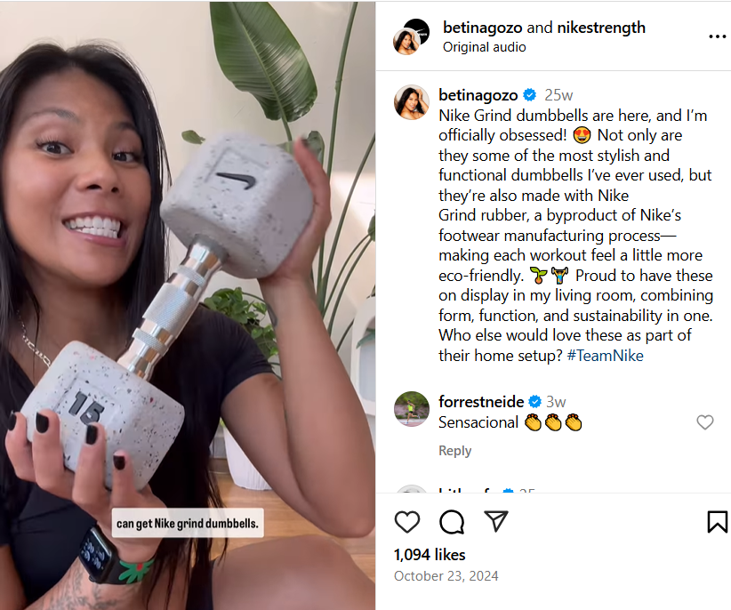
@betinapasso · collab with @nikestrength · from the report’s primary evidence
Four content themes (per the cited study)
01
Product features & specs
02
Lifestyle imagery
03
User testimonials
04
Promotional offers
20Case 03
Daniel Wellington.
A small watch brand outgrew its budget by going wide, not big — with two real posts captured in the report.
Watches · #DanielWellington
Many small voices > one huge one.
DW gifted watches — didn’t pay — to thousands of micro-influencers (1k–100k followers) instead of paying one megastar. Each creator styled their own photo and posted under #DanielWellington, often with a personal discount code.
The mechanic: zero paid spend up front, hundreds of niche audiences, a personal code to track ROI. Aggregate reach exploded — the brand grew into a $200M+ business with millions of Instagram followers.
Why it worked
Many small recommendations from trusted voices outperform one giant ad from a stranger — especially when each carries a trackable code.
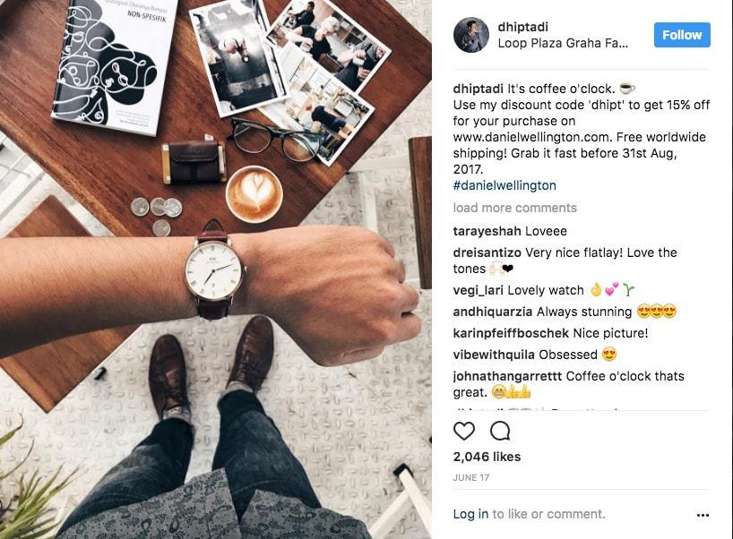
@dhiptadi · #danielwellington · discount code ‘dhipt’ for 15% off · 2,046 likes
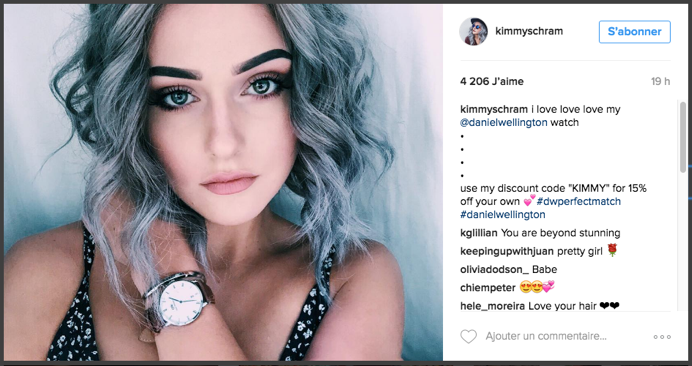
@kimmyschram · #danielwellington · discount code ‘KIMMY’ for 15% off · 4,206 likes
21Case 04
Blue Tokai.
The Indian specialty coffee brand that competed with global giants — six tactics, four observed behaviours, and a real fight on its hands.
Coffee · Founded 2013 · Matt Chitharanjan & Namrata Asthana
Premium without a premium ad budget.
Blue Tokai built its audience around the craft — high-quality roast videos, brewing tutorials, café interiors, customer posts. Instagram became the brand’s storefront: young Indian buyers learned what specialty coffee even was from the feed, then went to the café to taste it.
The six tactics (per report)
01
High-quality product photographs & videos
02
Coffee-brewing tutorials & educational content
03
Food-blogger & influencer collaborations
04
Café-culture & lifestyle experiences
05
Engagement via comments, polls, stories
06
Encouraging customer reposts (UGC)
Four observed customer behaviours
A
More likely to try new beverages after seeing them online
B
Positive online reviews increased brand trust
C
Attracted by premium-quality + modern-lifestyle association
D
Social promos drove repeat café visits
The competitive tension
Fights for shelf-space-of-mind against Starbucks internationally and a wave of local Indian café chains domestically. A bad review online can move a customer to a competitor in one tap.
The proof
A regional brand can own a category on social before it ever opens a store in your city.
22The new funnel
How a purchase actually happens now.
Five stages. Each stage has a primary lever — get the lever wrong and the customer drops out.
01 / DISCOVER
Scroll the feed
A reel, an ad, a friend's post. Visual and passive — buyer didn't ask for it.
02 / TRUST
Check the reviews
Ratings, comments, influencer takes. This is the gate that closes most sales.
03 / TRY
Pull the trigger
Usually a small first purchase. Discount or offer often pushes it over the edge.
04 / SHARE
Post the result
The buyer becomes the next person's discovery step. Free distribution.
05 / LOOP
Repeat & recommend
Brand stays in the feed; the customer comes back. Loyalty is now a content loop.
23A conversation
Marketing is now a conversation.
The shape of the network changed. The brand used to talk at people. Now it talks with a community that talks among itself.
Then — Broadcast
One voice, many ears.
TV, radio, print. The brand spoke. The audience listened. Replies were rare and slow.
Now — Dialogue
Every voice connects to every other.
Comments, DMs, reposts, reviews. Buyers reply to brands — and to each other.
24Double-edged
The same speed cuts both ways.
The mechanism that builds a brand overnight also breaks one. A bad review now travels at the same speed as a good one — sometimes faster.
The upside
A good experience becomes free distribution. Posts, tags, screenshots turn customers into ad agencies the brand never paid.
The downside
A bad experience moves just as fast. Negative reviews, viral complaints, and screenshots can damage a brand reputation in hours.
What this requires
Active monitoring, fast public replies, real transparency. The brands that win the loop don't try to silence it — they participate in it honestly.
25Findings
Six things the data actually said.
01 / Visual platforms dominate. Instagram + YouTube together cover the relevant audience. The rest is rounding error.
02 / Exposure is constant. 85% of respondents see product ads often or always. Discovery is now passive.
03 / Conversion is real. 76% have bought after seeing something on social — not just considered, bought.
04 / Reviews are the gate. 47.6% rank them as the #1 factor. Trust beats every other signal.
05 / Discounts unlock action. A close second at 28.6%. Urgency closes the awareness-to-purchase gap.
06 / Young consumers lead. Students and young professionals are the most-influenced and the most-likely to share back.
26Recommendations
Eight moves a brand can make tomorrow.
Ranked roughly by leverage — what produces the most change for the least cost.
01 / LEVERAGE
Make reviews unmissable.
It’s the #1 factor in 47.6% of decisions. Solicit them, surface them on every page, respond to negatives publicly.
02 / LEVERAGE
Lead with visuals.
Photo > copy. Reel > photo. Invest where the audience already pays attention.
03 / LEVERAGE
Right-size influencers.
Many credible micro-voices outperform one celebrity (the Daniel Wellington playbook).
04 / LEVERAGE
Engineer share-back.
Give people something worth posting — a name on the cup, a custom moment, a hashtag.
05 / TACTIC
Time the offer.
Discounts work — but only with urgency. A limited window converts; a permanent sale erodes price.
06 / TACTIC
Personalise the feed.
Use the platform’s targeting. A generic ad to everyone loses to a specific ad to someone.
07 / TACTIC
Reply, don’t broadcast.
DMs, comment replies, polls. Two-way communication is the moat.
08 / HYGIENE
Be mobile-first & honest.
Phone-optimised everything. Don’t fake reviews or inflate claims — social punishes that fast.
27Limitations
What the data can't tell you.
Four categories of constraint. The findings stay useful — within these.
01 / Scope
Who we asked.
21 respondents — directional, not definitive
Mostly Ludhiana & North India
Gen Z & young professionals dominate the sample
02 / Method
How we asked.
Self-report — answers can be aspirational
Percentage analysis only — no regression or correlation
No industry-by-industry comparative breakdown
03 / Time & reach
When & where.
A 2026 snapshot — trends shift fast
Four platforms only — no TikTok, LinkedIn, Pinterest
Findings age along with the platforms themselves
04 / Context
What it isolates.
Measures only the social slice of decisions
Price, quality, family also drive purchases
Academic budget — no paid panels or premium tools
Conclusion
Social media is the shelf now.
The buying decision is made before the wallet opens — in the feed, in the comments, in someone else's video. Brands that win this decade aren't the loudest. They're the ones the audience would post about without being paid to.
28References
Where this came from.
Grouped by source type. Primary is the survey data; the rest framed it.
22Primary survey — Google Forms · 21 respondents · May 2026PRIMARY
01Kaplan & Haenlein (2010). Users of the world, unite! — Business HorizonsACADEMIC
02Mangold & Faulds (2009). Social media: the new hybrid element — Business HorizonsACADEMIC
03De Veirman et al. (2017). Influencer marketing — Int’l Journal of AdvertisingACADEMIC
11Harvard Business Review (2022). Consumer decision-making in the digital ageACADEMIC
18Journal of Marketing Research — various articlesACADEMIC
19Int’l Journal of Research in Marketing — various studiesACADEMIC
04Deloitte (2023). Digital Consumer Trends ReportINDUSTRY
05McKinsey & Co. (2022). The Future of Digital MarketingINDUSTRY
06Statista (2024). Social media usage statisticsINDUSTRY
07Pew Research Center (2023). Social media and consumer behaviorINDUSTRY
08HubSpot (2023). State of Marketing ReportINDUSTRY
09Sprout Social (2023). Social media engagement insightsINDUSTRY